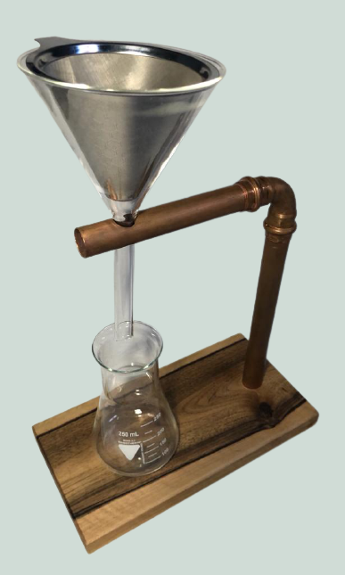
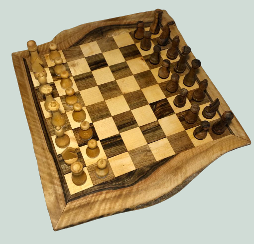

Auf dieser Seite will ich einige meiner Holz-Projekte vorstellen. Ich habe das Schreinern von meinem Papa und meinem Opa gelernt und schon früh damit angefangen selber Kleinigkeiten zu bauen.
Diese Holztasche besteht aus sehr dünn geschnittenem Kirschholz. Sie wird durch zwei Magneten verschlossen, der Knopf ist rein dekorativ. Die Tasche lässt sich öffnen, da die klappbaren Elemente aus sehr feinen Holzlamellen aufgebaut sind. Als Tragegurt wird ein Hanfseil verwendet um ein weiteres Naturmaterial mit dem Holz zu kombinieren.
Hier habe ich ein sogenanntes Keyboard-Kit gekauft und dafür ein Gehäuse aus Walnussholz gefräst. Am Gehäuse kann man eine Handgelenkauflage mit Magneten befestigen.
In der Werkstatt habe ich ein altes Kupferrohr gefunden. Mit einem Stück Walnussholz, einem hitzebeständigem Glastrichter und einem Edelstahl-Kaffeefilter habe ich daraus einen Kaffeezubereiter gebaut.
Dieses Schachspiel besteht aus Ahorn- (weiße Figuren) und Walnussholz (schwarze Figuren). Alle 32 Figuren habe ich einzeln gedrechselt. Bei den Springern habe ich die Flachen Seiten mit einer feinen Säge bearbeitet. Die Ränder des Schachspiels bestehen aus dem Rand des Walnussbretts. Dadurch wirken sie schön natürlich geschwungen.
Dieses Federmäppchen besteht aus Kirschholz und funktioniert nach einem ähnlichem Prinzip wie die Holztasche. Es lässt sich öffnen, da die feinen Lamellen eine Bewegung ermöglichen. Das Mäppchen wird ebenfalls mit zwei Magneten verschlossen.